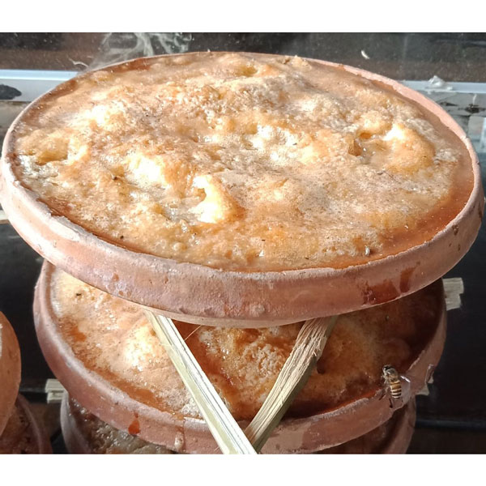
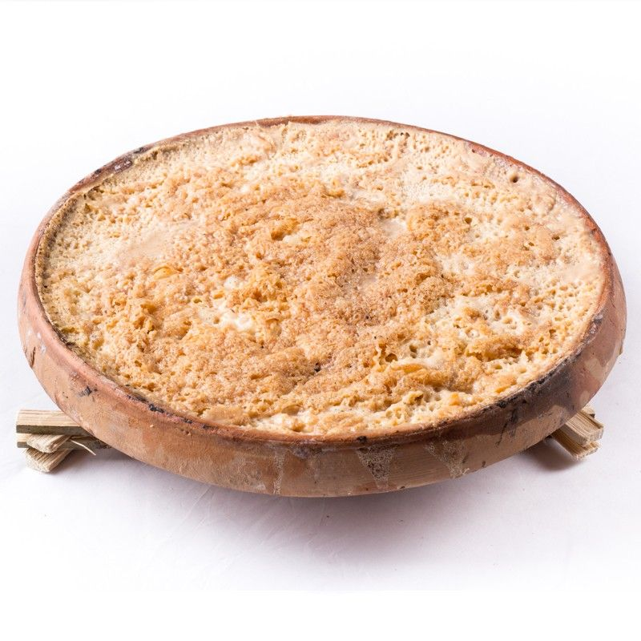
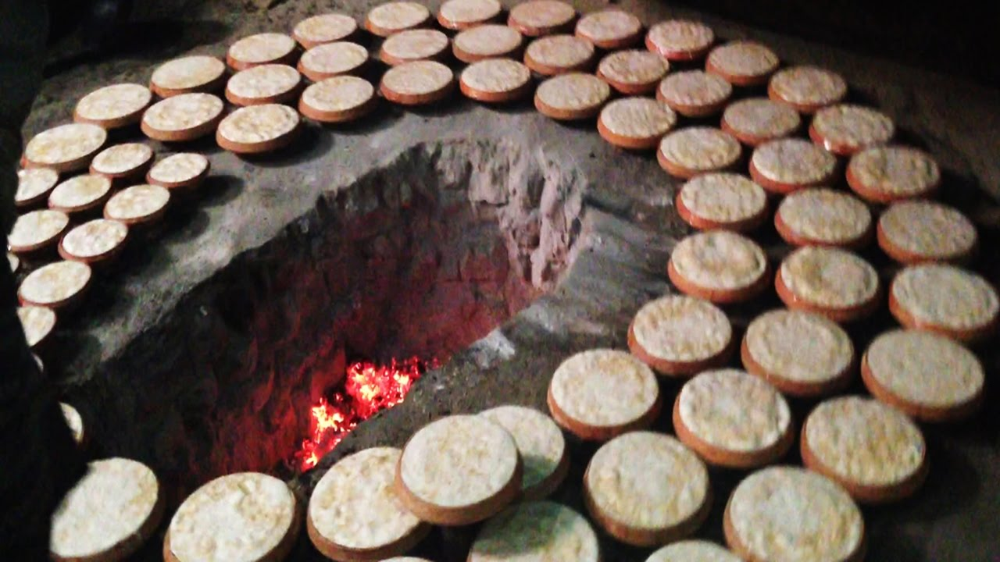

Certainly! Yogurt from Bogra is highly regarded for its delicious taste and unique qualities. Bogra, a city in Bangladesh, is renowned for producing high-quality yogurt that is cherished by locals and enjoyed by people from all over the country.
Bogra's yogurt is known for its thick and creamy texture, which sets it apart from other varieties. It is made from fresh cow's milk that is carefully processed to create a smooth and luscious consistency. The milk used in Bogra's yogurt is sourced from local dairy farms, ensuring its freshness and purity.
The production of Bogra yogurt involves a traditional method of fermentation that has been passed down through generations. The milk is first heated and then cooled to an optimal temperature. Afterward, a small amount of previously fermented yogurt, known as a starter culture or "dahi," is added to initiate the fermentation process. This starter culture contains live beneficial bacteria that transform the milk into yogurt.
The fermentation process takes several hours, allowing the bacteria to convert the lactose in the milk into lactic acid. This not only gives the yogurt its tangy flavor but also contributes to its thick consistency. The longer the fermentation, the thicker and more flavorful the yogurt becomes.
Bogra yogurt is often enjoyed as a standalone snack or dessert, but it is also used in various culinary preparations. It can be mixed with fruits, honey, or granola to create a delicious and nutritious breakfast or snack. Additionally, it is a common ingredient in traditional dishes like biryanis, curries, and kebabs, where it adds a delightful creaminess and tangy taste.
The popularity of Bogra yogurt extends beyond the city itself. It is highly regarded across Bangladesh, with many people seeking out yogurt specifically from Bogra due to its exceptional quality and taste. The unique production methods and the expertise of the local dairy farmers contribute to the distinct characteristics of Bogra yogurt, making it a beloved culinary treasure.

So, if you ever have the opportunity to taste yogurt from Bogra, I encourage you to give it a try. Its creamy texture, tangy flavor, and cultural significance make it a truly special and enjoyable culinary experience.